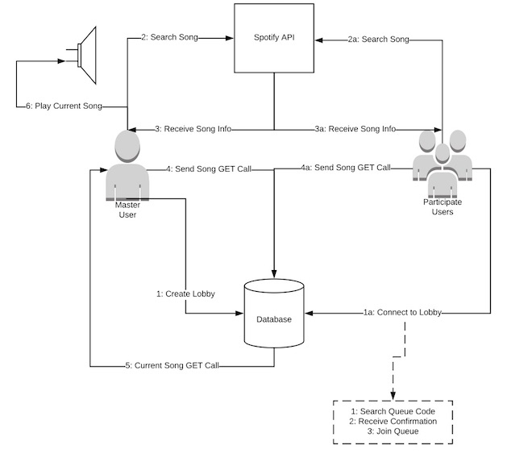

Description - This website will be used to allow users to create a singular queue for Spotify that they can all add to at the same time. For example, if a group of people were in a room listening to music, they could connect to the website, add songs to the queue, and then listen to them through someones laptop connected to a speaker. Where as now, one person is in charge of the queue and everyone has to tell them what to queue up.
Design - This project will utilize a database (either SQL or a NoSQL database like Elasticsearch) to maintain the queue for the different users, and the Spotify API for the playback and song searching. To utilize the Spotify API, I will be using a wrapper that is easy to integrate with Maven. Essentially, a user will create a queue, which will come with a passcode. This queue will be created within the database, that will also hold all the song information. Other users can connect to that queue with the passcode, and then add songs to the queue. When a user adds a song to the queue, it will be added to the database. The device that created the queue will play the current song. This website would be useful for parties, pregames, roadtrips, etc. Really, any event where a group of people are listening to music.

Schedule - for the first checkpoint, a user will be able to log into their spotify and create a queue. For the second checkpoint, a user will be able to add to the queue and play it. For the third checkpoint, multiple users can connect to the queue and then the main user will play it.
Justification - This project has a great use case that many college kids will use. College aged kids love to listen to music together, and they do so a lot, so this application will get a lot of us. It is complex in how it integrates multiple systems (Spotify API, SQL Database) and how it relies on the use of multiple users.